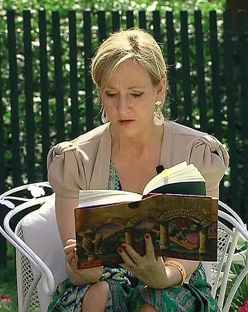

Biography
Joanne Rowling, more commonly known as J. K. Rowling, is the famous author of the Harry Potter series. Her penname is a combination of her first initial, her grandmother's first inital (her name was Kathy), and her last name. She intended to hide her identify a bit because her books were geared towards young boys around the age of ten, and she thought they wouldn't read her writing if they knew she was a female author.
She has been through some rough times in her life, growing up in a small suburban town in England. Her mother died of multiple sclerosis when she was still fairly young, and she had a hard time getting her first book, Harry Potter and the Philosopher's Stone published because people thought it was too long. Joanne had been married more than once and had a daughter named Jessica. Jessica was only a baby when her mom finally got her book published by a small business called Bloomsbury. More on how she got her first book published
Joanne's Wizarding World includes 12 books, has been translated into over 80 languages, and more than ten award-winning movies have even been made after them, including the Fantastic Beats series. She's even written three murder mystery books under the pseudonym Robert Galbraith to avoid expectations before her cover was blown and her identity was revealed.More about Robert Galbraith